什麼都不奇怪
今天是星期日，在波茲南休息的第二天，依照本來的規劃這也是最後一天，但目前已經變成其中的一天。
這座城市值得遊覽的地方很多，一點也不急著離開。
本來就很安靜的波茲南，星期日全市變得靜悄悄的，路上只剩下教堂鐘響的聲音，大家都去做禮拜了。
在這座到處都是教堂的城市，隨意找到一間位於舊城附近的教堂，進去參觀做禮拜的情形。
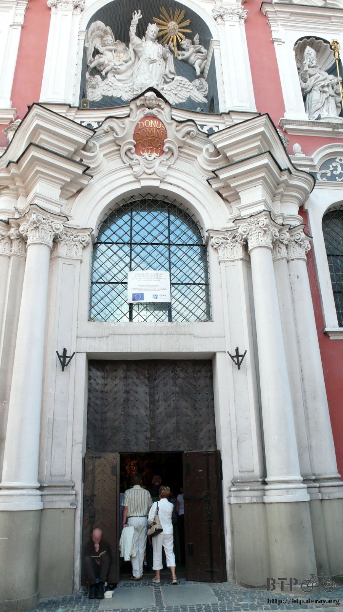
外觀看起來很普通，一進到裡面就是令人呼吸停止的華麗。
絡繹不絕的信徒前來做禮拜，座位早就坐滿了，現在才進來的人只好用站著的方式進行。
門邊有一個穿著黑色衣服的男生坐在小板凳上看書，衣著乾淨、舉止高雅，絕對猜不出來他其實是乞丐。
波茲南的乞丐超有格調，靜靜站在路邊，大多都很乾淨，站在路邊像在等人似的，唯一的差別就是在地上放了一個裝零錢的小盒子。
有些可能會主動問你有沒有零錢？有沒有香菸？若是回答沒有，他們也不會糾纏半天，微笑著就走開。
一走進教堂的大門就會看到這樣的景色
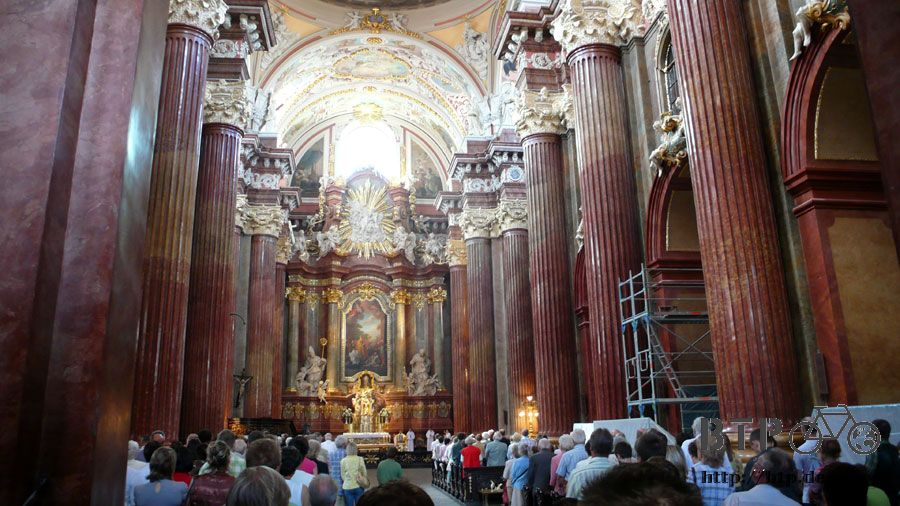
信徒的數量非常多，教堂內挑高至少有五層樓，神父的禱告詞跟樂音隆重的演奏融洽地結合在一起。
即使是沒有宗教信仰的我，也能感受到一股敬意，讓人覺得自己的渺小和一種超越人類的力量想傳達的語言。
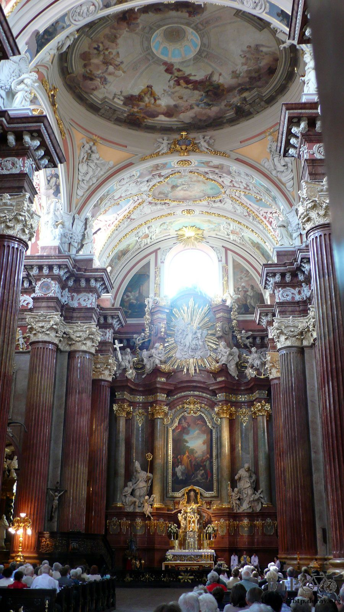
天花板的繪畫很漂亮，整體的裝潢也很有味道，這樣的規模教堂遍佈了整個市區，而且很多都是二十四小時開放，只要想到了就可以進去禱告尋求慰藉。
進入教堂記得不要穿短褲、汗衫，頭上不要戴帽子、包頭巾，墨鏡也要拿下來，這是基本的禮貌。
拍照則沒有問題，閃光燈記得要關起來就是了，不要讓自己唐突的行為變成國際笑話。
今天早上要去跳蚤市場閒晃，馬路上有斑馬線的地方就會設計這些按鈕，按下去幾秒鐘之後燈號就會變成行人通行的綠燈。
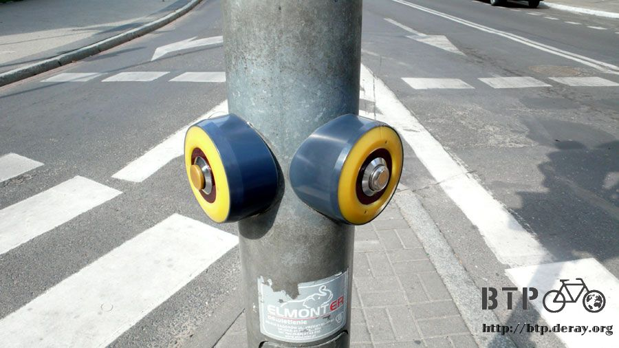
人行道上的樹木當初栽種的時候，大概沒料到會長得這麼高大，鋪設的石板都因此而隆起，八月下旬時序已經漸漸入秋，落葉繽紛。
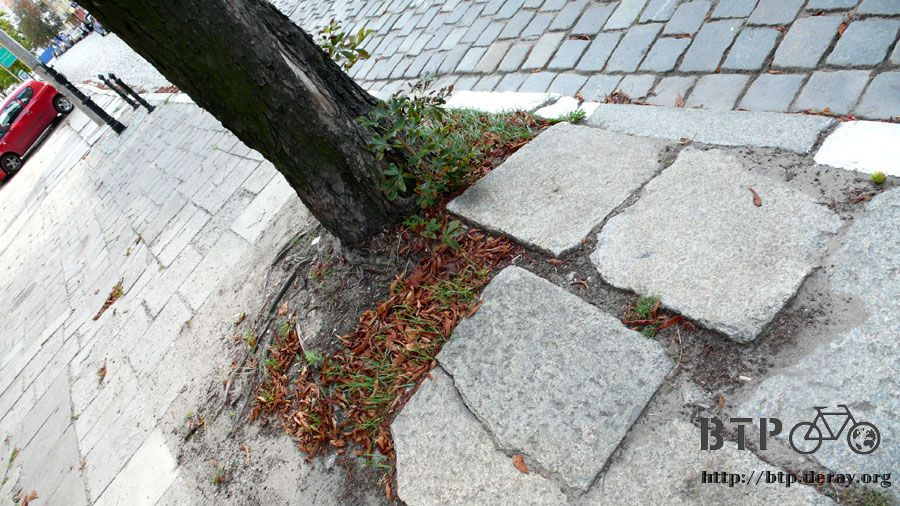
有著大煙囪的廢棄工廠就是跳蚤市場的所在地，每到星期天才會擺設出來，今天大多數商店都是休息狀態，到這參觀另一種風貌的商店。
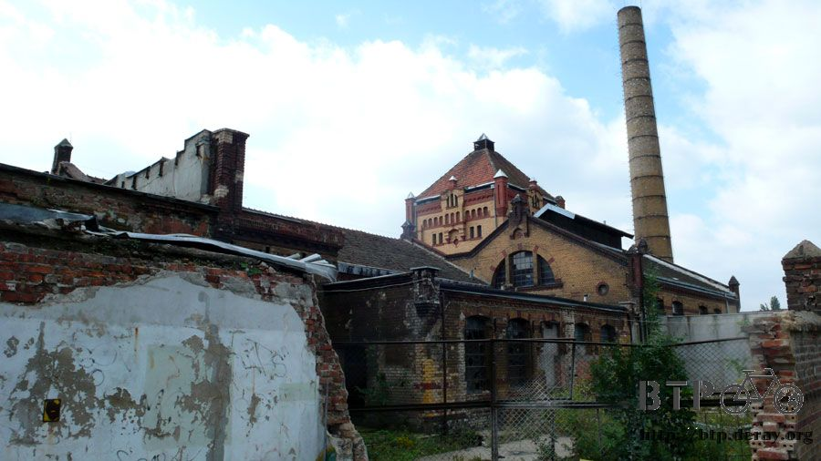
沿著廢棄工廠的圍牆走一圈，人山人海的入口裡面就是跳蚤市場，什麼樣奇怪的東西都可以買得到。
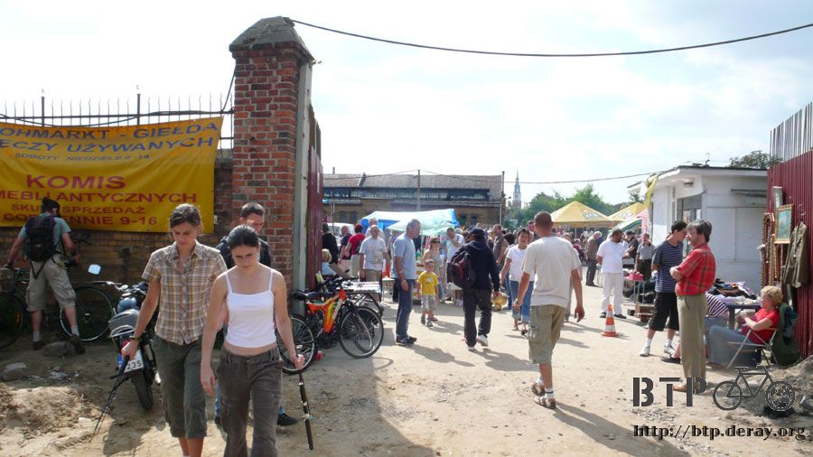
左邊掛著的黃色布條上頭寫的就是跳蚤市場，有單車騎士正在停車，大概沒幾分鐘就會不見，波茲南單車失竊率極高。
不論是昂貴的單車還是一百元一台的那種，不管有沒有上鎖，只要離開視線的範圍很容易就會被偷走。
入口大門看見的第一個攤位，一堆舊衣服擺在桌上，舊舊的畫作、有的只剩畫框，連這些也可以拿來賣。
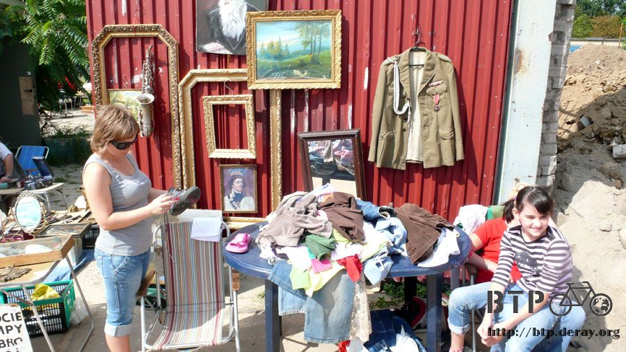
其實這些已經算是很好的商品，有些攤位賣的東西已經接近於廢棄物的程度，同時價錢也極度便宜。
與其說是商品，不如說是把家中陰暗倉庫裡頭不要的東西搬出來，全部攤在陽光底下，看誰願意花一點點的錢將它們帶回家。
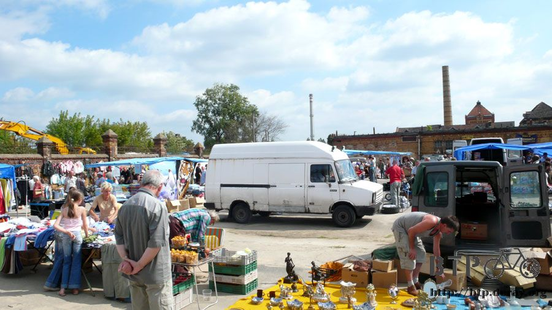
開始逛之前要吃點美食來餵飽自己，跳蚤市場裡賣吃的攤位很少，這間烤肉攤位就是其中一間。
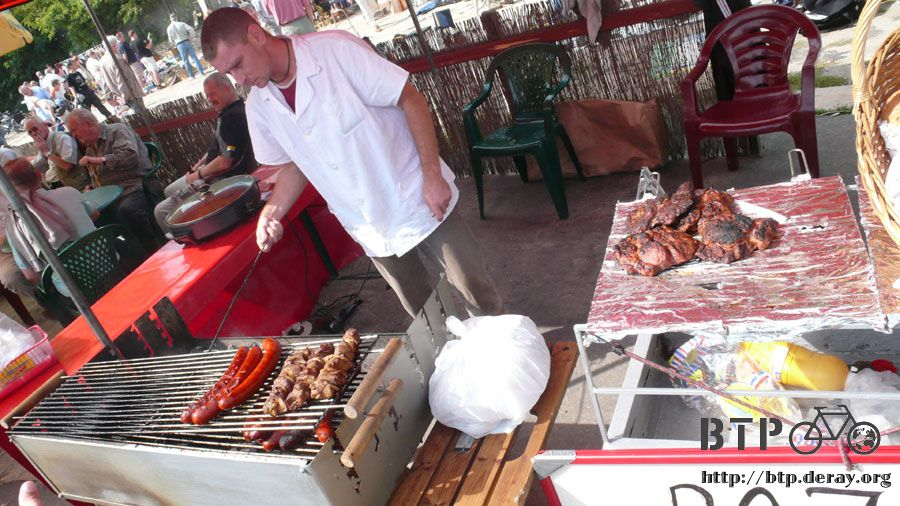
有烤超大根的香腸跟超厚的豬肉可以選擇，價錢跟烤肉的份量相比算是很便宜的。
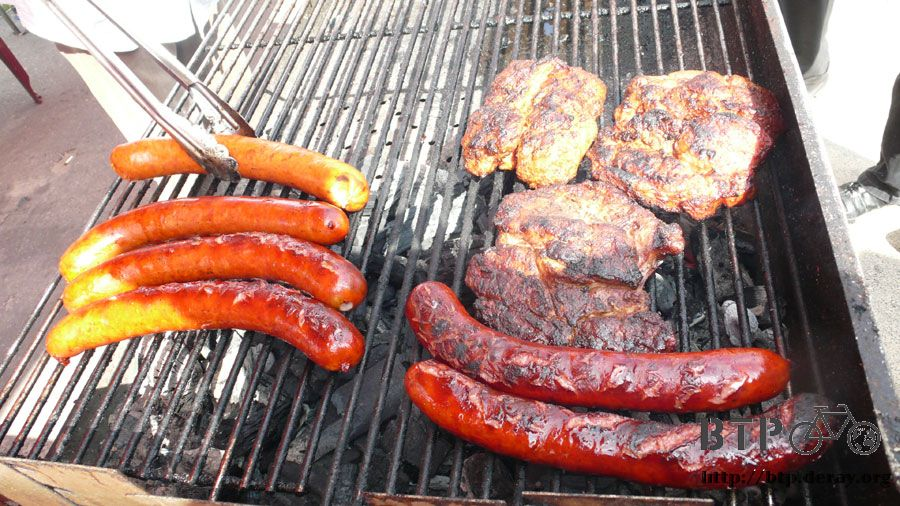
配上番茄醬跟黃色芥末醬還有一大塊的麵包，一個人要是能夠在這邊吃掉一根美味多汁大香腸和一大塊口齒留香烤肉，此生無憾矣。
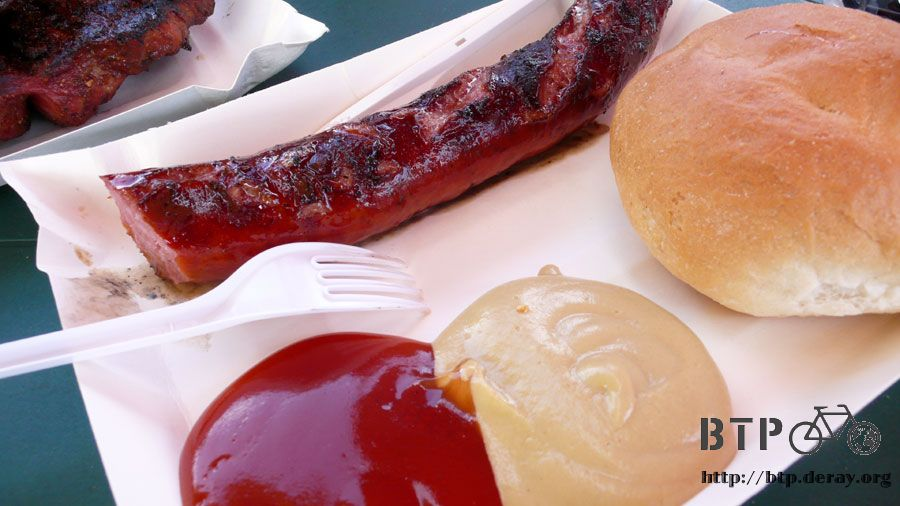
跳蚤市場什麼奇怪的東西都賣，看到後來就覺得沒有什麼是不能賣的，這些東西一點也不奇怪。
各式各樣的商品數量很多，底下只用簡單的文字敘述帶過。
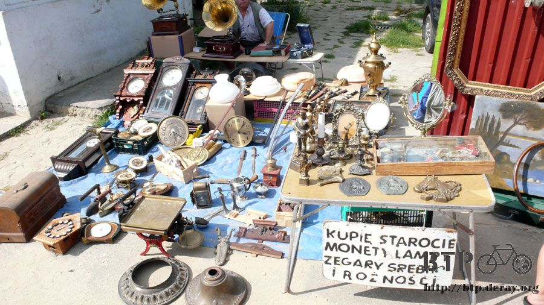
鐵製類的東西大多都是生鏽的，銀製品也是黯淡無光，只要買回去願意花點時間處理的話，看起來不怎麼樣的東西都能夠有嶄新的面貌。
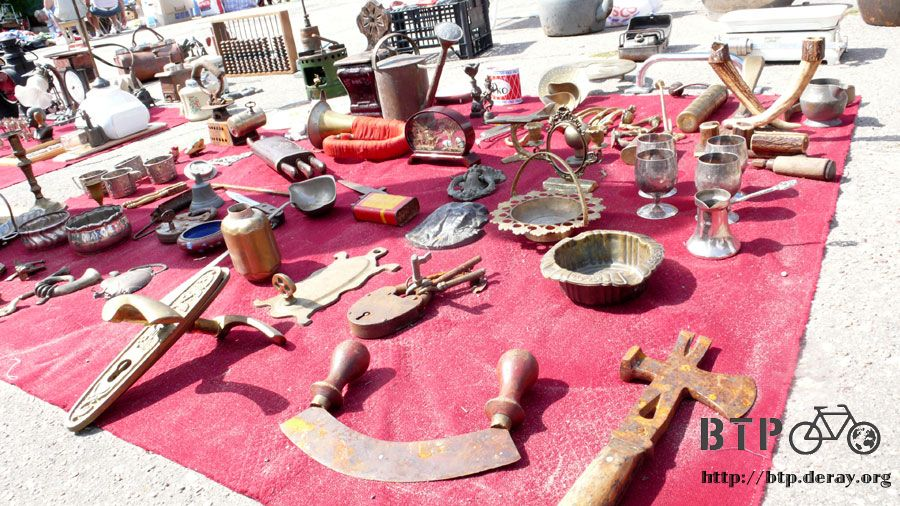
底下是生鏽的斧頭跟切香料用的彎刀，兩手各抓一邊然後就可以邊聊天邊將香料給切碎，不用像拿菜刀那樣刀起刀落地剁，只要左右交替地向下壓就可以。
這間露天的3C賣場已經很先進了，商品有古老的手機，CRT的螢幕，一代的PlayStation跟迷你版，真令人懷念呀～
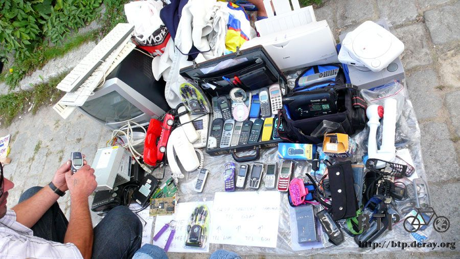
跳蚤市場所有的東西都沒有標價，完全看老闆開價多少，然後就開始殺價，價錢的彈性空間極大，在這邊挑商品跟殺價也是一種很有趣的感覺。
前提是波蘭文要會講。
在華沙的時候路上的年輕人都會說英文，而且說得非常好，坡茲南老一輩的人會說德語、俄語、西班牙語、波蘭語，唯獨英文是沒辦法通的。
搭飛機進波蘭的時候也是一樣，海關盤查時對於不會講波蘭語的人都會比較囉嗦一點，或許不只一點，而是非常囉嗦。
我以為自己是從白俄羅斯進入波蘭，又拿台灣護照的緣故，所以才被海關刁難半天，但就算走的是國際機場的大門也不會輕鬆到哪裡去。
全飛機的人都出關了，台灣人留在最後才慢慢詢問，這樣的情況是很普遍的，同樣的情形在俄羅斯也可以看到，不論跟團或是自助都一樣。
好多腳踏車呀～而且價錢都很便宜，贓車的比例應該尷尬地有點高，大猩猩在波茲南已經被偷走四台車了。
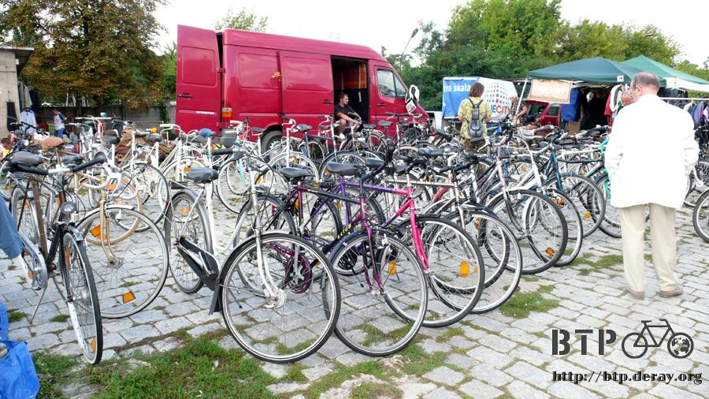
超級古董的獵槍、手槍、西洋劍，全都是真品，但要找得到火藥跟鉛製的子彈才可以發射，這些東西至少有五十年的歷史了，拿去博物館展覽都行。
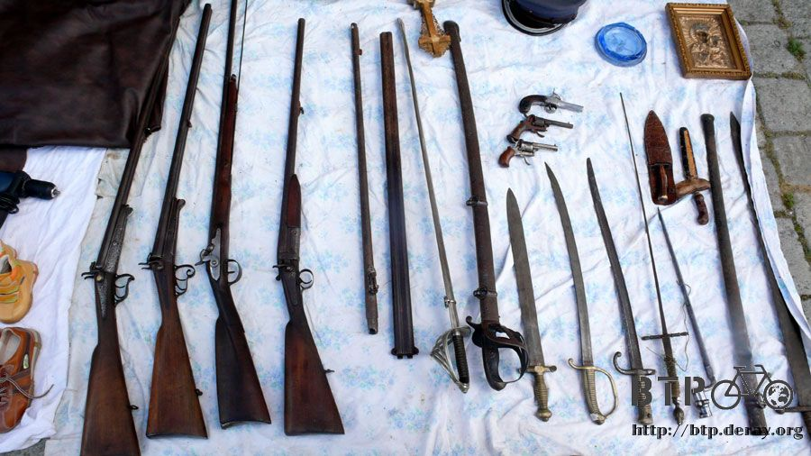
好大一隻的鴨子娃娃，放在跳蚤市場正中央的一輛拖車上面，看起來像吉祥物，有錢也可以跟老闆買，這樣下次來看到的吉祥物就會換成別隻。
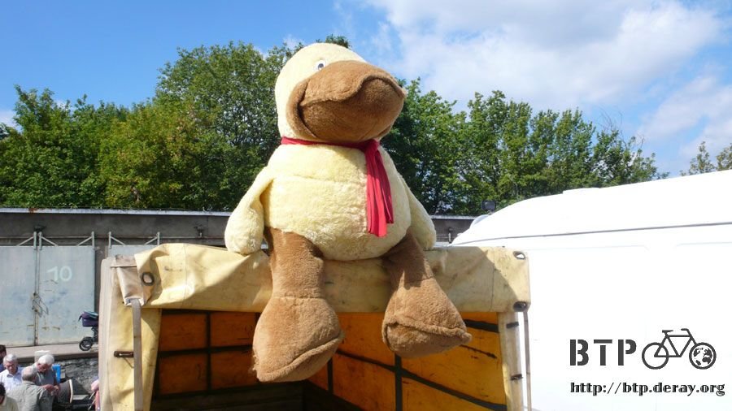
人山人海，搭配陽光普照的好天氣，做完禮拜出來這邊尋寶是星期天的好活動。
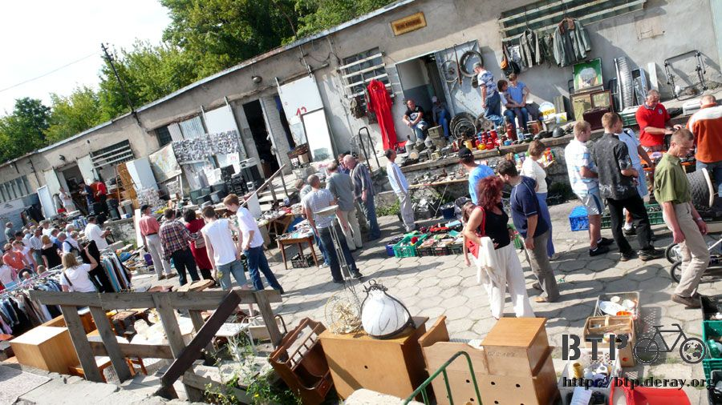
波蘭人用餐的時間不是一天三餐，他們早上八點的時候吃早餐，十點再吃第二早餐，接下來要下午三點才吃午餐，然後晚上十點睡覺前吃晚餐。
一天吃四次，每一餐所吃的東西都不一樣，有些只有生冷的麵包，下午的那一餐才是一天中最豐盛的。
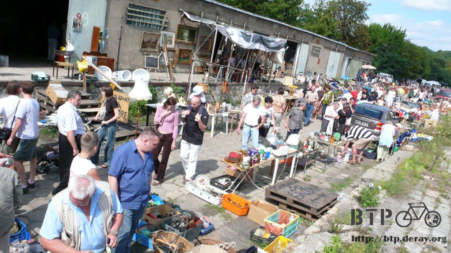
賣鞋子的店，這一間很不錯，會把兩隻同樣的鞋子擺在一起讓人挑選，很多間都是一堆鞋子山，能不能從中找到兩隻一樣的鞋子就要憑運氣了。
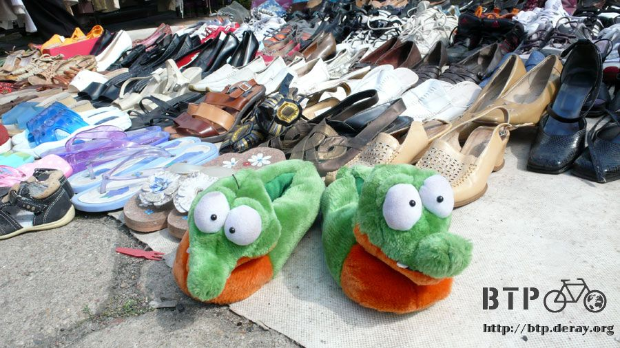
有點想買這一雙鱷魚拖鞋，可惜腳太大穿不下>"< 繼續穿藍白拖吧。
連藍色的小熊餅乾盒也可以拿出來賣，整桌的東西每個都是兩元茲羅提，折合台幣二十五元而已。
商品不分類地一股腦擺在桌上是很常見的，比較像是一般家庭的拍賣會，有分類過的就像是二手商店的感覺。
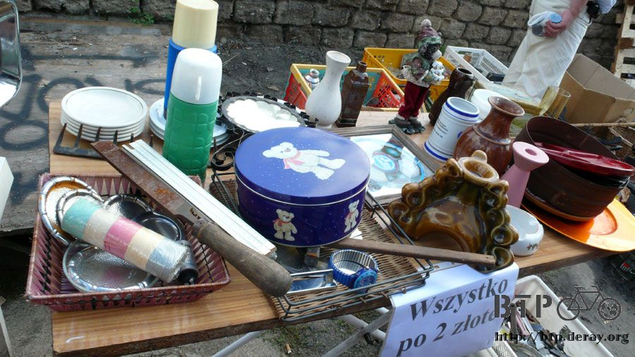
這一攤也是賣衣服的，比起一堆攤在桌上還要來的高級，還可以掛在飛雅特上面展示。
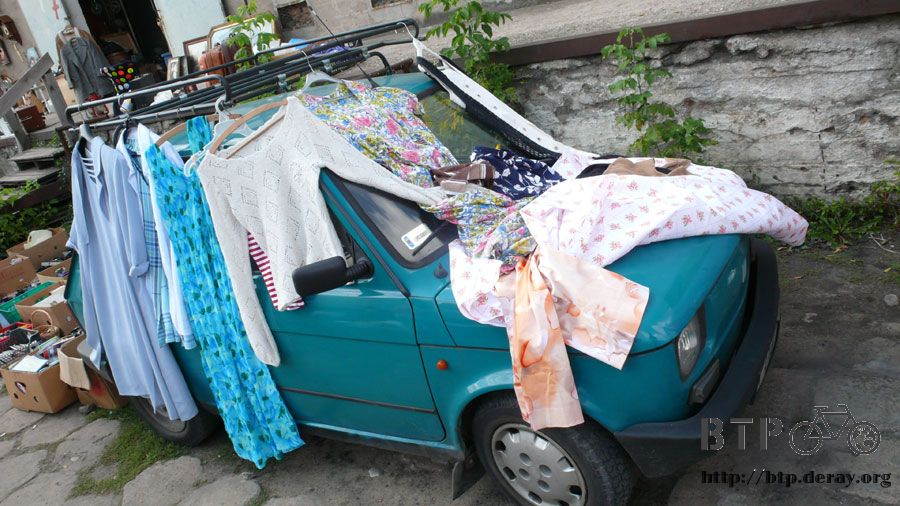
這一個攤位的老闆問我說願不願意用這一台ZENIT的相機換我手上的LX2？
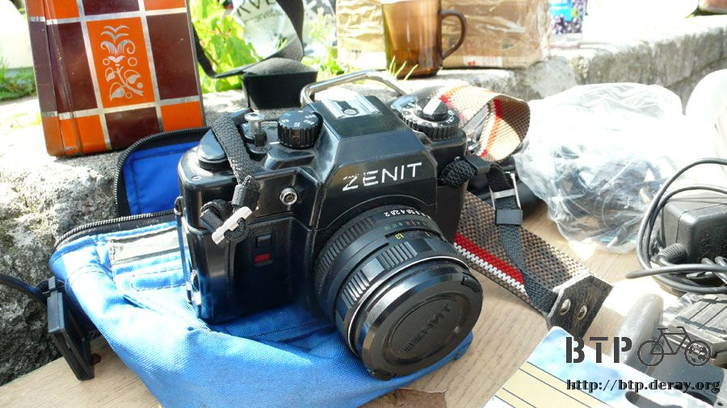
一比一交換，我不需要再額外貼錢唷！
講得好像是划算交易，當然對老闆而言很划算，這台古董相機也蠻有味道的，可是我搖頭說不換。
老闆就繼續加碼，最後變成用一台超大的攝影機、ZENIT相機、古董電晶體收音機加上一個奇怪的獎杯跟我交換相機。
波蘭人真是非常有趣～當然還是沒有換，不然接下來拍照就得買一堆底片了。
大雜燴式的拍賣，有些賣手錶的攤位價錢都極低，但是手錶都是沒電不會動的，買了之後要自己去換電池，因為電池的價格比手錶還貴。
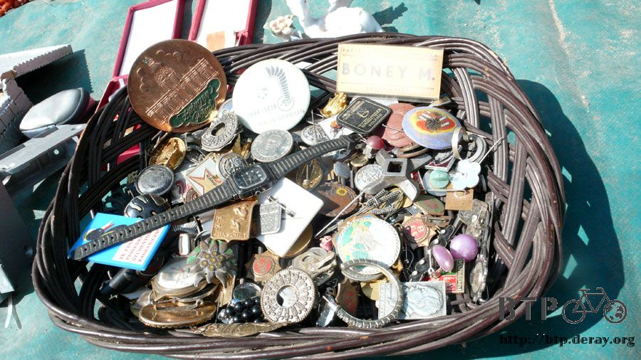
有時間在這裡耗上一個早上的人，絕對可以用低廉的價格買到一堆有趣的東西，不見得實用、也許某一天醒來看到，還會覺得當初買這個是要幹嘛？
但是在討價還價以及沿著廣場走一圈尋找寶物的那種感覺，令人感到莫名的愉悅。
舊書攤，漫畫、書籍、雜誌、光碟什麼都有，波蘭街上的書店還蠻多的，書店的數量也是一種城市文化氣質的象徵。
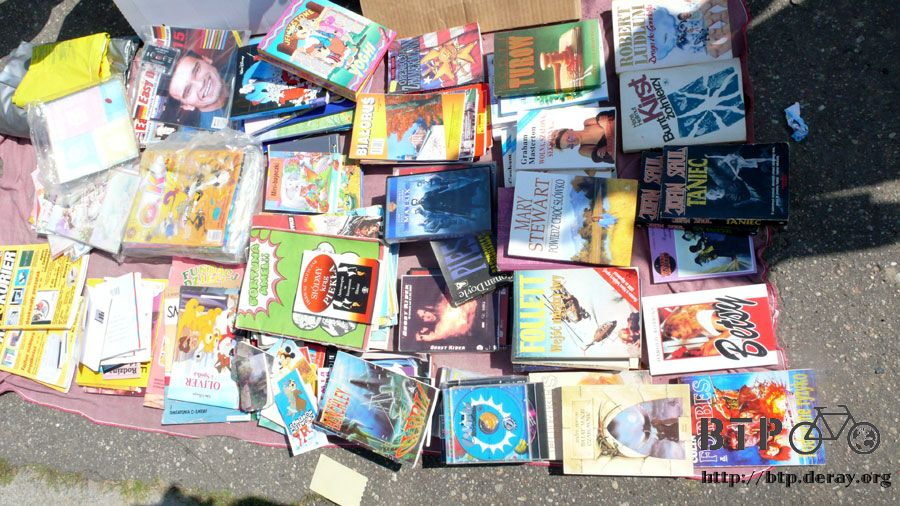
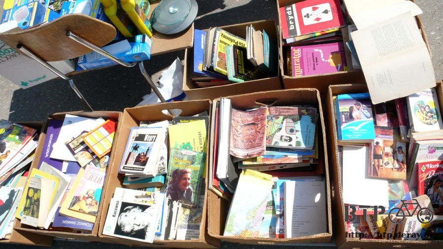
這個都是光碟片，不太像二手商品，比較像盜版品，進入歐洲之後情色文化也開始唾手可得，之前經過的國家都比較封閉保守。
一樣是等公車的街邊商店，在俄羅斯跟在波蘭所能買到的東西差異就很大，越往西邊走這個差異會越明顯。
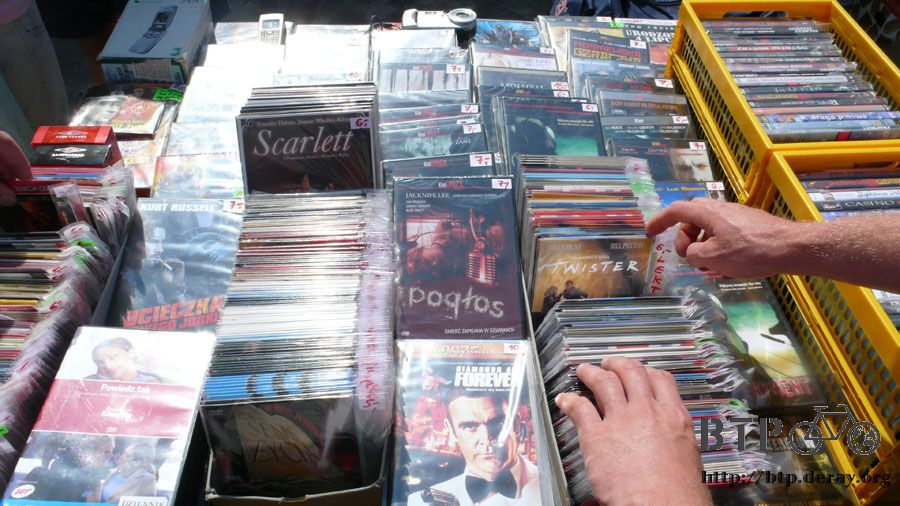
賣鏡子的店，其實我是吸血鬼，所以鏡子照射不出形體來～哈啾！(好冷喔）~_~
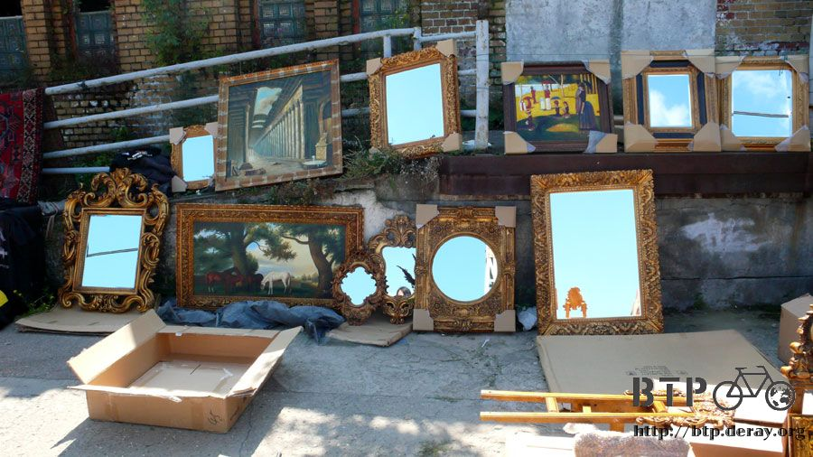
超級古董真空管收音機！
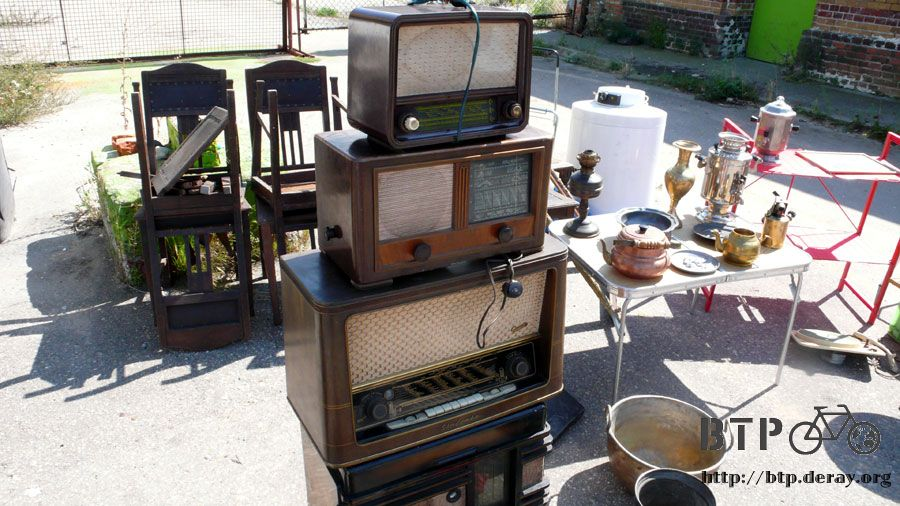
在這邊挑一台狀況好一點的，轉手賣給識貨的人可以賺上一筆喔。
因為是真空管的緣故，體積都很大，之後電晶體發明了，收音機就變得很小一台，這些堆疊起來的收音機總計應該不止一百歲了。
有一些店家會賣茶葉、咖啡、罐頭等食品，這些都是很危險的東西喔，比起賣古老槍枝還有殺傷力。
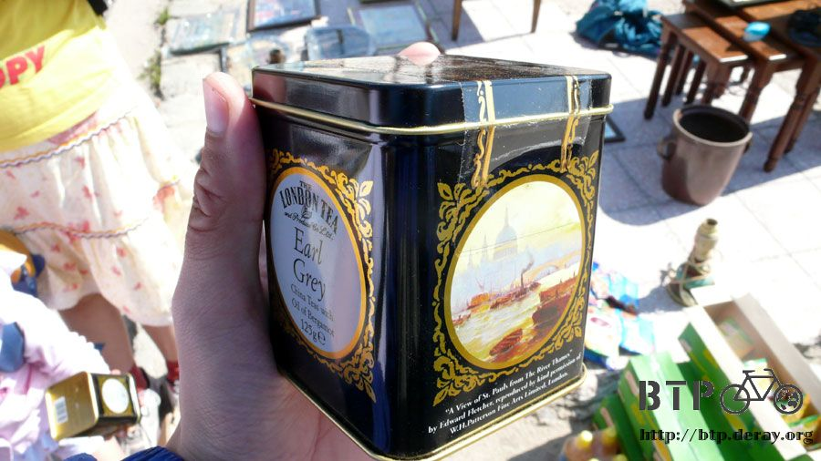
外觀看起來都很完整，造型也很漂亮，翻到底下一看，保存期限已經被磨掉了。

不知道已經過期多久還是照樣拿出來賣，這個買回去建議還是純收藏就好。
當討人厭的客人到家裡拜訪時，就泡一杯給他喝。
黑膠唱片的店家，商品保存都超級完美，跟新品沒有差別，但是買了黑膠唱片要有機器才可以聽，不然就只有純收藏的價值了。
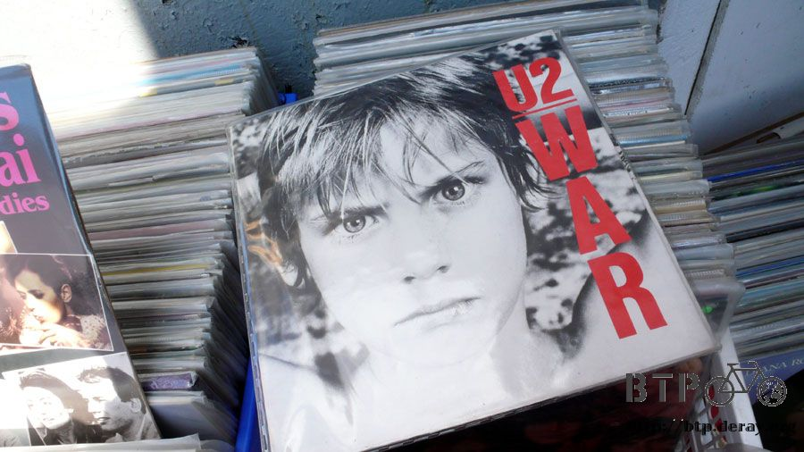
這一張是U2的專輯，封面好漂亮，這邊也可以找到很古老的音樂劇跟電影配樂，不論喜歡什麼樣的東西在跳蚤市場都能找到屬於自己的天地。
這裡有趣的東西實在太多了，每張照片都介紹的話我會死掉。
像這樣的市集世界各地，包含台灣都有，自己去走一趟就會發現跳蚤市場的魅力～
繼續閱讀：8.27 莊嚴肅穆大教堂
波蘭-茲羅提－ 1：12 台幣
8.26 |
總計：0元 |
出外靠朋友 |
|